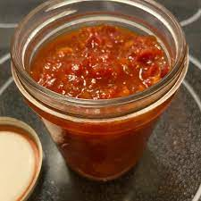

This was given to my mom by her best friend who is a southern girl at heart. It is a sweet and savory flavor that you never forget. Try it with a grilled cheese or on scrambled eggs...you can put it on anything!
Cook the bacon in a large skillet over medium-high heat, turning occasionally, until evenly browned, about 10 minutes. Drain the bacon slices on paper towels. Crumble bacon when cool.
Stir tomatoes, sweet onion, sugar, apple cider vinegar, salt, black pepper, and hot sauce together in a saucepan and bring to a boil, stirring constantly to dissolve sugar. Stir in crumbled bacon and cook over medium heat, stirring often, until the spread is very thick, about 1 hour. Adjust salt and black pepper.
Cool and spoon into a 1-pint glass jar with a lid; keeps refrigerated for 1 week or frozen for 2 months. If freezing, put spread into small jars and let jars thaw in refrigerator overnight before using.